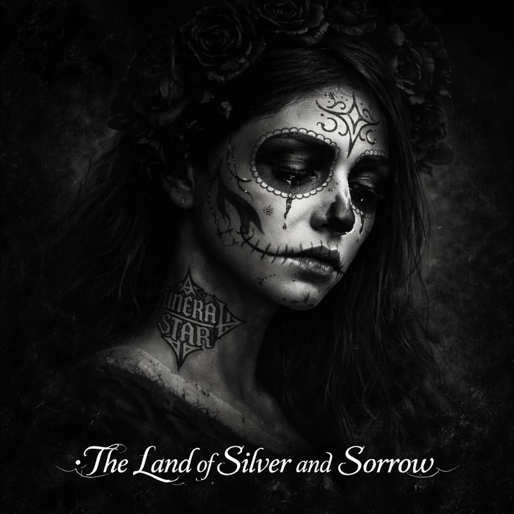

06 / Romantic Collapse
The Land of Silver and Sorrow
The Land of Silver and Sorrow
There’s dust on the plaza at sunrise Boot heels echo down stone Mama lights candles to saints she prays to For sons who don’t come home The radio hums with a love song But nobody’s dancing tonight The trucks roll slow through the border town Headlights cutting the light And the church bells ring for the faithful But they also ring for the gone You learn real fast in this country You live quiet, you live long In the land of silver and sorrow Where the desert swallows the rain We raise our glasses to tomorrow Though tomorrow may not remain Ay corazón, no preguntes por qué La vida se vende y se va In the shadow of kings with rifles We all just learn how to survive There’s a boy who wanted to be something More than a name on a wall But hunger speaks louder than dreaming And money answers the call His father once worked the rail yard His brother now guards a gate You don’t choose much where he’s from You just learn to accept your fate And the guitars cry in the cantina Trumpets burn through the night Every toast is a small rebellion Every laugh is a fight In the land of silver and sorrow Where the desert swallows the rain We raise our glasses to tomorrow Though tomorrow may not remain Madre mía, protégelos bien De balas y traición In the shadow of kings with rifles We’re all just passing through They say power is just another prayer Spoken with gold and fear But love still blooms in the alleyways Even here, even here Mi amor, si no regreso No llores por mí Canta fuerte, bajo el cielo Que fui libre al fin In the land of silver and sorrow Where the desert swallows the rain We hold each other till morning Like it might wash away the pain Ay vida dura, ay tierra cruel Pero seguimos de pie In the shadow of kings with rifles We still dare to love anyway Dust on the plaza at sunset Candles still burning low Life goes on in the border town That’s all we ever knowBack to discography